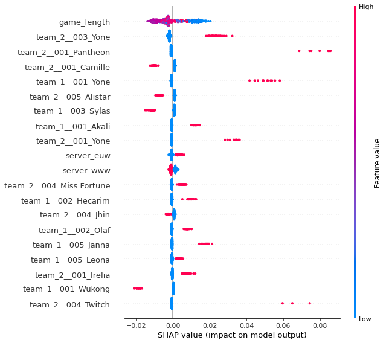
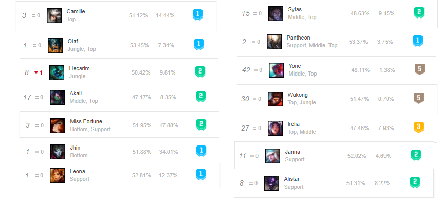
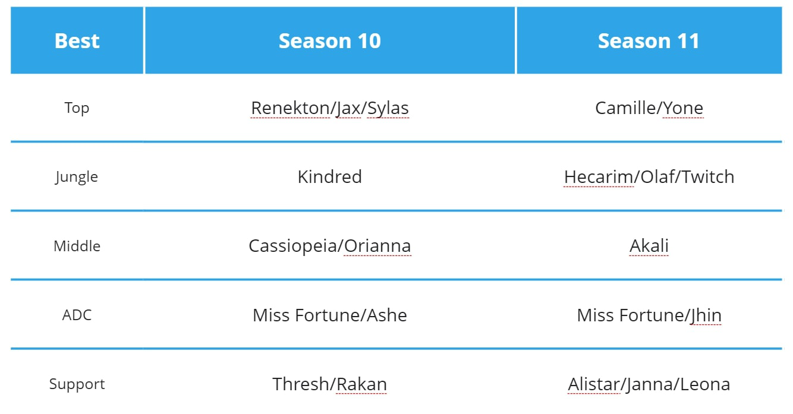
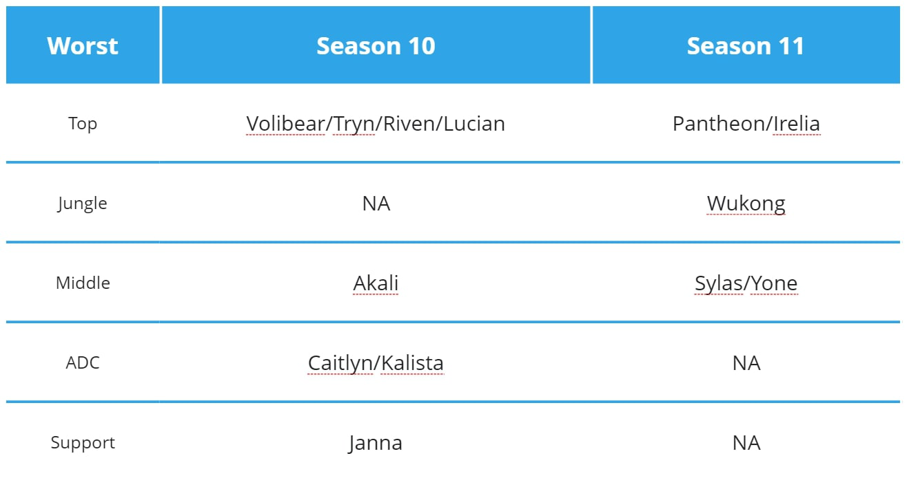

| result | server | team_1__001 | team_1__002 | team_1__003 | team_1__004 | team_1__005 | team_2__001 | team_2__002 | team_2__003 | team_2__004 | team_2__005 | timestamp | game_length | |
|---|---|---|---|---|---|---|---|---|---|---|---|---|---|---|
| 1265 | Defeat | www | Camille | Hecarim | Neeko | Aphelios | Sett | Rumble | Kayn | Twisted Fate | Miss Fortune | Leona | 2020-12-07 18:48:25 | 34m 23s |
| 1958 | Defeat | eune | Kennen | Rengar | Kassadin | Miss Fortune | Bard | Kayle | Graves | Fiora | Caitlyn | Thresh | 2020-12-18 18:26:55 | 16m 12s |
| 1877 | Victory | euw | Mordekaiser | Olaf | Zoe | Jhin | Alistar | Shen | Hecarim | LeBlanc | Aphelios | Galio | 2020-12-30 08:58:13 | 34m 27s |
| 778 | Victory | www | Aatrox | Elise | Lucian | Miss Fortune | Pantheon | Camille | Graves | Zoe | Jhin | Leona | 2020-12-29 21:49:55 | 18m 56s |
| 2591 | Defeat | na | Poppy | Kayn | Akali | Senna | Braum | Volibear | Olaf | Yone | Twisted Fate | Janna | 2020-11-10 07:38:39 | 31m 15s |
LoL Prediction S11 🗡️
League of Legends s11 Ranked Prediction

Introduction
Riot Games brings massive changes to their game ‘League of Legend’ every year. This year, they changed their item system, drastically changing their game ecosystem. It has been few months since the big update and now players have fully adapted to the changes. Let’s take a look at what happened to the ecosystem and what is the best team composition now.
- Find out what are the most popular champions now.
- Find out which team composition is the best.
- Compare Season 10 and pre-Season 11. How did the item changes impact the game?
The dataset
The data we are going to use is a csv file obtained from scraping op.gg which is a website with League of Legend statistics. If you are interested you can visit here. The dataset consists of 2901 ranked matches from Korea(WWW), North America(NA), Eastern Europe(EUNE), and Western Europe(EUW) servers. It has which team won the match, the total time of the match, blue team composition and red team composition. Note that only the high elo games were added this includes Challenger, Grand Master, Master and sometimes even High Diamonds. Note that there are 153 total unique champions with ‘Rell’ as the latest addition. Duplicate games have been removed.
Data Cleaning
- Change game_length to continuous variable
- Clean null values and uninformative columns
- Change categorical variables to dummy variables
| result | server | team_1__001 | team_1__002 | team_1__003 | team_1__004 | team_1__005 | team_2__001 | team_2__002 | team_2__003 | team_2__004 | team_2__005 | game_length | |
|---|---|---|---|---|---|---|---|---|---|---|---|---|---|
| count | 2901 | 2901 | 2901 | 2901 | 2901 | 2901 | 2901 | 2901 | 2901 | 2901 | 2901 | 2901 | 2901.0 |
| unique | 2 | 4 | 96 | 62 | 102 | 70 | 56 | 95 | 58 | 102 | 72 | 63 | 235.0 |
| top | Defeat | www | Camille | Graves | Akali | Jhin | Leona | Camille | Graves | Yone | Kai'Sa | Leona | 1818.0 |
| freq | 2271 | 1592 | 305 | 581 | 235 | 590 | 355 | 266 | 504 | 226 | 568 | 381 | 100.0 |
Most popular champions
- Camille(Top): 19.68% pick rate
- Graves(Jg): 37.4% pick rate
- Akali/Yone(Mid): 15.89% pick rate combined
- Jhin/Kai’sa(Adc): 39.92% pick rate combined
- Leona(Supp): 25.37% pick rate
Notes: - The result is very skewed because there are 2271 Red Team win compared to only 630 Blue Team wins - There are in total 2901 games and more than half of it is from Korean server
{'result', 'server', 'team_1__004', 'team_2__003', 'team_1__001', 'team_2__005', 'team_1__003', 'team_2__001', 'game_length', 'team_1__002', 'team_1__005', 'team_2__004', 'team_2__002'}So there are no null values which is good!
| result_Victory | server_euw | server_na | server_www | team_1__004_Akali | team_1__004_Anivia | team_1__004_Annie | team_1__004_Aphelios | team_1__004_Ashe | team_1__004_Aurelion Sol | ... | team_2__002_Udyr | team_2__002_Urgot | team_2__002_Vi | team_2__002_Volibear | team_2__002_Warwick | team_2__002_Wukong | team_2__002_Xin Zhao | team_2__002_Zac | team_2__002_Zed | game_length | |
|---|---|---|---|---|---|---|---|---|---|---|---|---|---|---|---|---|---|---|---|---|---|
| 1265 | 0 | 0 | 0 | 1 | 0 | 0 | 0 | 1 | 0 | 0 | ... | 0 | 0 | 0 | 0 | 0 | 0 | 0 | 0 | 0 | 0.700272 |
| 1958 | 0 | 0 | 0 | 0 | 0 | 0 | 0 | 0 | 0 | 0 | ... | 0 | 0 | 0 | 0 | 0 | 0 | 0 | 0 | 0 | 0.329939 |
| 1877 | 1 | 1 | 0 | 0 | 0 | 0 | 0 | 0 | 0 | 0 | ... | 0 | 0 | 0 | 0 | 0 | 0 | 0 | 0 | 0 | 0.701629 |
| 778 | 1 | 0 | 0 | 1 | 0 | 0 | 0 | 0 | 0 | 0 | ... | 0 | 0 | 0 | 0 | 0 | 0 | 0 | 0 | 0 | 0.385608 |
| 2591 | 0 | 0 | 1 | 0 | 0 | 0 | 0 | 0 | 0 | 0 | ... | 0 | 0 | 0 | 0 | 0 | 0 | 0 | 0 | 0 | 0.636456 |
| 655 | 0 | 0 | 0 | 1 | 0 | 0 | 0 | 0 | 0 | 0 | ... | 0 | 0 | 0 | 0 | 0 | 0 | 0 | 0 | 0 | 0.517651 |
| 1089 | 0 | 0 | 0 | 1 | 0 | 0 | 0 | 0 | 0 | 0 | ... | 0 | 0 | 0 | 0 | 0 | 0 | 0 | 0 | 0 | 0.700272 |
| 1221 | 0 | 0 | 0 | 1 | 0 | 0 | 0 | 0 | 0 | 0 | ... | 0 | 0 | 0 | 0 | 0 | 0 | 0 | 0 | 0 | 0.617108 |
| 1480 | 0 | 0 | 0 | 1 | 0 | 0 | 0 | 0 | 0 | 0 | ... | 0 | 0 | 0 | 0 | 0 | 0 | 0 | 0 | 0 | 0.419212 |
| 1791 | 0 | 1 | 0 | 0 | 0 | 0 | 0 | 0 | 0 | 0 | ... | 0 | 0 | 0 | 0 | 0 | 0 | 0 | 0 | 0 | 0.556687 |
10 rows × 771 columns
The data is ready for modelling.
Linear Regression
LinearRegression(normalize=True)test r2: -2.7134011717466985e+28
train r2: 0.25972262531839096Clearly, linear regression is a poor model for this problem haha. Makes sense since we only have discrete fields except game_length.
| est_int | coefs | abs_coefs | |
|---|---|---|---|
| 435 | team_2__001_Aphelios | 7.451403e+14 | 7.451403e+14 |
| 689 | team_2__004_Sion | -7.451403e+14 | 7.451403e+14 |
| 298 | team_2__005_Ornn | 5.132176e+14 | 5.132176e+14 |
| 248 | team_1__001_Sona | -5.052884e+14 | 5.052884e+14 |
| 31 | team_1__004_Kindred | -4.224175e+14 | 4.224175e+14 |
| 43 | team_1__004_Pantheon | 4.184556e+14 | 4.184556e+14 |
| 282 | team_2__005_Jayce | 4.156125e+14 | 4.156125e+14 |
| 635 | team_1__005_Yasuo | 3.822057e+14 | 3.822057e+14 |
| 595 | team_1__005_Ekko | 3.822057e+14 | 3.822057e+14 |
| 412 | team_1__003_Thresh | -3.822057e+14 | 3.822057e+14 |
| 79 | team_2__003_Bard | 3.781834e+14 | 3.781834e+14 |
| 328 | team_2__005_Zoe | -3.772819e+14 | 3.772819e+14 |
| 19 | team_1__004_Gragas | 3.742793e+14 | 3.742793e+14 |
| 548 | team_1__002_Leona | -3.660990e+14 | 3.660990e+14 |
| 611 | team_1__005_Nidalee | 3.660990e+14 | 3.660990e+14 |
| 526 | team_1__002_Camille | -3.586479e+14 | 3.586479e+14 |
| 382 | team_1__003_Miss Fortune | 3.339794e+14 | 3.339794e+14 |
| 5 | team_1__004_Annie | 3.293351e+14 | 3.293351e+14 |
| 576 | team_1__002_Twitch | 3.012684e+14 | 3.012684e+14 |
| 292 | team_2__005_Miss Fortune | 2.971517e+14 | 2.971517e+14 |
Recall that 1 = Blue win and 0 = Red win. So positive coefs. here means helpful for the Blue team and negative coefs. means helpful for the Red team. Most of the fields in the top 20 table above, are not something we see often. For example 435-aphelios(top), 689-sion(adc), 248-sona(top) are considered troll. Here are some other findings. - Looks like every lane is somewhat equally important as their appearance in the table above are similiar - Most of these are troll picks negatively affecting its own team’s winrate - Picks that are actually helping team’s winrate: Sion(ADC), Pantheon(ADC), Yasuo(Sup)??, Ekko(Sup)?? - This table raises more questions than answers!
Random Forests
RandomForestClassifier(max_leaf_nodes=32, n_estimators=2000, n_jobs=-1)test accuracy: 0.8003442340791739Wow we went from 0% to 80% accuracy with random forest!

Interestingly, West Europe tend to win more as Blue team as games are longer. In contrast, Korea tend to win more as Red Team as games gets longer. So there seem to be a trend difference between regions. Furthermore, in general, the shorter the game, blue team wins more for some reason I cannot figure out.
Best/Worst Composition
Best - (Top)Camille,Yone (Jg)Hecarim,Olaf,Twitch (Mid)Akali (Adc)Miss Fortune,Jhin (Sup)Alistar,Janna,Leona
Worst - (Top)Pantheon,Irelia (Jg)Wukong (Mid)Sylas,Yone
If we compare this with the official na.op.gg champion rankings, all the best champions listed here are also listed on their website as either tier one or two as well. (Except Twitch and Pantheon).  Note that this is just for comparison. Op.gg has million times more data with more regions. Also how they rank these champions are not revealed.
Comparing with S10


Comparisons - The new update caused each roles to impact more evenly to the game’s result - Bottom lane has generally good picks with no worst picks in season 11. - The new update caused more ‘high risk high reward’ champions to win more and ‘generally good’ champions to fall